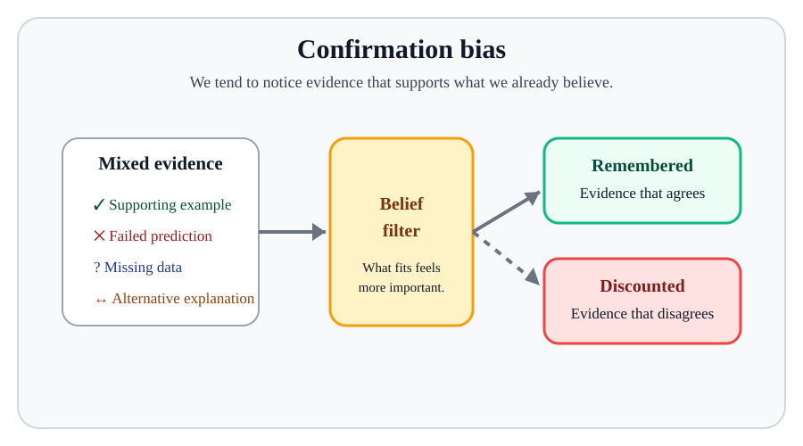

2. Science of Life#
May 28, 2026 | 11662 words | 58 min read
How to use this chapter
This chapter is about how science became the tool we use to study life in the universe. As you read, focus on three connected questions: How did ancient skywatching lead to scientific models? How did the Copernican Revolution change our view of Earth? How does modern science separate evidence from speculation?
Astrobiology is the scientific study of life in the universe. That does not mean that scientists have already found life beyond Earth. They have not. Earth is still the only confirmed example of life we know. Instead, astrobiology asks a careful scientific question: given what we know about astronomy, biology, chemistry, geology, physics, and planetary science, where could life exist, and what evidence would convince us?
That question is much older than spacecraft, telescopes, or modern biology. People have wondered about life beyond Earth for thousands of years. Sometimes that wondering appeared in mythology, religion, philosophy, or science fiction. Those forms of imagination matter because they show what people cared about, but they are not the same as scientific evidence. In this chapter, we follow the historical path from ancient skywatching to modern science so that later chapters can ask better questions about possible life elsewhere.
A major theme will be the difference between a habitable place and an inhabited place. A habitable world could have conditions that allow life as we understand it. An inhabited world actually has life. The difference matters. A planet with liquid water might be interesting, but water alone is not a discovery of life. A claim about extraterrestrial life needs evidence strong enough that other people can test it, challenge it, and, if necessary, reject it.
2.1. Why this history belongs in a life-in-the-universe course#
At first, a chapter about ancient astronomy may seem far away from the search for life. We are not yet talking about DNA, microbes, exoplanets, spacecraft, or alien signals. But this history is doing important work. Before we can evaluate claims about life beyond Earth, we need to understand how science handles big questions when the evidence is incomplete.
The question “Are we alone?” is emotionally powerful. It can make people hopeful, anxious, skeptical, or deeply curious. Those reactions are human, but they are not enough to answer the question. A scientific approach requires habits that do not depend on what we want the answer to be. We need to know how to build models, how to compare predictions with observations, how to recognize uncertainty, and how to avoid turning a possibility into a conclusion.
Ancient astronomy gives us a manageable case study. The planets are visible to the naked eye, and their motions can be tracked over time. Different models can be compared against the same sky. Some models explain simple patterns but struggle with details. Better measurements reveal problems that were previously hidden. That is almost exactly the situation in modern astrobiology. We have clues about habitability, planetary atmospheres, organic chemistry, and extreme life on Earth, but we do not yet have confirmed extraterrestrial life. We therefore need strong habits for reasoning under uncertainty.
This video gives a broad introduction to astronomy as a science. As you watch, focus on the difference between simply looking at the sky and using observations to build explanations about the universe. Astronomy matters for astrobiology because it gives us a way to turn big questions into testable questions. Before we can ask whether other worlds are inhabited, we need to understand how scientists use observations, models, and evidence to decide what is physically possible.
This chapter also prepares us to think carefully about Earth’s place in the universe. If Earth is the central, unique, physically different place, then life elsewhere may seem unlikely. If Earth is one planet among many, orbiting one star among many, then life elsewhere becomes easier to consider. That shift does not prove that other life exists. It changes the question from “Could there be other worlds at all?” to “What are those worlds like, and what evidence can we gather?”
A second theme is humility. Many intelligent people in the past defended ideas that later turned out to be wrong. They were not always careless. Often they were using the best tools, assumptions, and observations available to them. The lesson is not that people in the past were foolish. The lesson is that even reasonable ideas must answer to evidence.
2.2. Why the sky mattered first#
Long before people built telescopes, the sky was the most obvious example of order in nature. The Sun rose in the east and set in the west. The stars appeared to rotate across the night sky. The Moon changed shape in a repeating monthly pattern. A few bright points of light, later called planets, wandered slowly through the constellations. Even without modern instruments, these patterns were hard to ignore.
For people living without clocks, calendars, GPS, weather satellites, or electric lights, the sky was not background scenery. The Sun organized the day. The Moon was connected to tides, which mattered especially for coastal communities. The changing constellations helped track seasons. Careful skywatching helped people decide when to plant, travel, celebrate, or prepare for changes in weather. Astronomy began partly because the sky was beautiful, but also because the sky was useful.
It is also easy to understand why early people interpreted the sky through mythology. The planets still carry names from mythological traditions: Mercury, Venus, Mars, Jupiter, and Saturn. A society that had no modern physics but saw the Sun move across the sky every day might naturally imagine a divine or personal cause. A story about a god carrying the Sun is not science, but it can be a reasonable human response to an impressive pattern before better explanations exist.
Checkpoint
Why would ancient people care about tracking the Sun, Moon, and stars?
The important shift toward science began when people started asking whether natural patterns could be explained by natural causes. That change did not happen all at once, and it did not happen in only one culture. Ancient Chinese astronomers kept careful sky records thousands of years ago. Babylonian astronomers became skilled at predicting eclipses. Maya astronomers developed precise calendars. These traditions show that systematic observation was widespread. Modern science, however, requires more than collecting facts. It asks why the pattern occurs and whether the explanation can be tested.
This video focuses on what people can see in the sky without a telescope. As you watch, pay attention to why repeated patterns in the Sun, Moon, stars, and planets made the sky useful for timekeeping, navigation, calendars, and early scientific thinking.
2.2.1. From sky records to explanations#
It is useful to separate two achievements that are sometimes blended together: recording patterns and explaining patterns. A society can become very skilled at keeping sky records without having a modern scientific explanation for why those patterns occur. Predicting an eclipse, for example, does not automatically require knowing that Earth and the Moon are spherical bodies moving through space under gravity. With enough records, repeating cycles can be recognized.
This distinction matters because science is not just a large collection of facts. A table of planetary positions is valuable, but it is not the same as a model of planetary motion. A calendar can predict seasons, but it does not by itself explain Earth’s orbit or axial tilt. Science becomes more powerful when observations are organized by explanations that can be tested in new situations.
The transition from pattern-recognition to explanation is one reason ancient astronomy is so important. The sky provided repeated phenomena that demanded interpretation. Why does the Moon have phases? Why do the planets wander? Why do some stars appear in one season but not another? Why does the sky look different when people travel north or south? Each question encouraged people to compare what they expected with what they actually saw.
Modern astrobiology works the same way. A telescope may record a dip in a star’s brightness. By itself, that dip is just a measurement. A model may interpret it as a planet crossing in front of the star. Additional observations may estimate the planet’s size, orbit, or atmosphere. Later still, a spectrum may suggest chemical gases in that atmosphere. At every step, scientists ask whether the explanation fits the evidence better than alternatives.
This is why the chapter emphasizes models. A model is not a decorative diagram. It is a disciplined way of saying, “If nature works this way, then we should observe that.” When observations disagree, the disagreement is not an embarrassment to hide. It is information. The most productive moments in science often begin with a mismatch between model and data.

Fig. 2.1 The celestial sphere is a useful model of how the sky appears from Earth: stars seem to lie on a sphere surrounding us, even though they are actually at many different distances. Image credit: Brian Brondel/Wikimedia Commons, CC BY-SA/GFDL licensed.#
{kind=link}
The idea of a celestial sphere is a good example of a scientific model. The stars are not really painted on the inside of a giant dome. Still, from the ground, they appear to move as if they are attached to a rotating sphere around Earth. That model helped ancient observers describe and predict what they saw. A model does not have to be the final truth to be useful. It only has to represent some important part of nature well enough to organize observations and make predictions.
The apparent steadiness of the ground also shaped early thinking. If you stand outside, Earth does not feel like a spinning sphere moving through space. The ground feels solid. The horizon looks flat. The sky seems to rise overhead like a dome. From everyday experience alone, a flat Earth below a domelike sky above is an understandable first guess. The scientific question is not whether that guess feels natural. The question is whether it survives better observations.
2.2.2. Early Greek science and natural explanations#
Ancient Greece became one important setting for a new style of explanation. Greece sat at a crossroads for travelers, merchants, and armies, and by about 500 BC Greek culture had become a major intellectual center in the Mediterranean world. Greek thinkers did not invent careful skywatching, but many of them tried to replace mythological explanations with rational, natural explanations.
Thales, whose name is often pronounced “Thay-lees,” is usually described as one of the first Greek thinkers to ask what the universe is made of without immediately invoking the gods. His own answer was not correct. He imagined Earth as a flat disk floating on an infinite ocean. The scientific importance of Thales is not that he got the answer right. His importance is that he treated the universe as something that could be explained through nature.
This habit of asking for natural explanations continued through Plato, Aristotle, and other Greek philosophers. They did not practice science in the modern experimental sense. Plato and Aristotle often trusted reasoning, intuition, and philosophical argument more than controlled experiment. That is a serious limitation. But the Greeks also developed mathematics, especially geometry, and used it to explore ideas about the heavens. Mathematics made it possible to ask not just “What do I think?” but “What would this idea imply?”

Fig. 2.2 This Renaissance painting visually represents a later tradition of remembering Greek philosophers as people who argued about nature, knowledge, and explanation. Image credit: Raphael/Wikimedia Commons, public domain.#
.jpg){kind=link}
Checkpoint
Why is a wrong natural explanation still a step toward science?
The best scientific habit that appears in early Greek thought is the willingness to challenge an idea. If an explanation does not match what is observed, something has to give. Modern science depends on that discipline. Beautiful ideas, traditional ideas, and personally satisfying ideas can all be wrong.
Taken together, Greek thinking helped prepare the way for modern science in several connected ways. Greek philosophers increasingly looked for explanations within nature rather than treating every sky event as a direct action of the gods. They also used mathematics and geometry to reason about Earth’s shape, the structure of the heavens, and the motions of planets. Just as importantly, they treated explanations as ideas that could be argued over, challenged, and compared with what people observed. They were not doing modern experimental science yet, but they helped establish the habit of asking whether a model of nature could make sense of the visible world.
2.2.3. Why models can be useful before they are complete#
A scientific model is always a simplification. It leaves something out. A globe leaves out houses, trees, and individual people, but it still represents Earth’s shape better than a flat map for some purposes. A subway map may distort physical distance, but it clearly shows which stations connect. A model of the sky can be useful even if it does not capture the true three-dimensional structure of the universe.
This point helps avoid two common mistakes. The first mistake is thinking that a model must be perfectly true before it is useful. The celestial sphere is not literally real, but it remains useful for describing positions in the sky. The second mistake is thinking that a useful model must be ultimately correct. The Ptolemaic model could make predictions, but later evidence showed that its Earth-centered interpretation was not the best description of nature.
In science, we often ask what a model is good for. Does it organize observations? Does it make predictions? Does it reveal a relationship that was not obvious before? Does it fail in a way that teaches us what to try next? These questions are more productive than simply asking whether a model is “right” or “wrong” in one step.
This attitude is especially important in the search for life beyond Earth. When scientists talk about a habitable zone, for example, they are using a model. The model identifies the range of distances from a star where a planet with the right atmosphere could have liquid water on its surface. That is useful, but it is not a life detector. A planet can be in the habitable zone and still be lifeless. A moon outside the traditional habitable zone might still have a subsurface ocean. Models guide the search; they do not replace evidence.

Fig. 2.3 The Ptolemaic system is a useful historical example of a model that organized many observations, even though its Earth-centered interpretation was later replaced. Image credit: S. Perquin/Wikimedia Commons, CC BY-SA 4.0 licensed.#
{kind=link}
The ancient models in this chapter are therefore practice. They show how models can help, how they can mislead, and how better observations can force us to revise them.
2.2.4. A round Earth and the geocentric worldview#
One of the persistent myths about history is that educated Europeans in 1492 believed Earth was flat. That is not accurate. The idea of a spherical Earth was well established among Greek thinkers by about 500 BC. Pythagoras and his followers accepted a spherical Earth partly because the sphere seemed mathematically perfect. Aristotle gave observational arguments, including the curved shadow Earth casts on the Moon during a lunar eclipse. Eratosthenes later measured Earth’s circumference around 240 BC using shadows and geometry.
These developments matter for astrobiology because they show that human ideas about the cosmos changed when observations became more precise. A person standing in one place might think Earth is flat. A person comparing observations from different latitudes notices that the sky changes from place to place. That difference suggests that Earth’s surface is curved. Evidence from a broader perspective can overturn the assumptions that feel obvious locally.
The dominant Greek model of the universe became geocentric, meaning Earth-centered. This model felt natural. The ground does not seem to move, and everything in the sky appears to rise, cross overhead, and set. If the stars seem to circle us, then placing Earth at the center is an understandable model. It also fit the celestial sphere idea: Earth sat at the middle, while the heavens surrounded it.
A geocentric model did not automatically answer the question of life beyond Earth, but it strongly shaped the debate. If Earth is the central, special place in a layered universe, then other inhabited worlds may seem less likely. If Earth is one world among many, then life elsewhere becomes easier to imagine. The model of the universe affects what questions people are willing to ask.
Try the numbers
Eratosthenes estimated Earth’s circumference using geometry. The details are more historical than biological, but the example shows a key scientific idea: a simple measurement plus a simple model can reveal something much larger than what we directly see.

Fig. 2.4 Eratosthenes used a local shadow measurement and a geometric model of a round Earth to estimate Earth’s circumference. The important lesson is that a simple observation can reveal something much larger when it is connected to the right model. Image credit: CMG Lee/Wikimedia Commons, CC BY-SA 4.0 licensed.#
{kind=link}
Suppose two cities are separated by a distance of about \(800\ {\rm km}\) along Earth’s surface. At the same time of day, the Sun appears overhead in one city, while a vertical stick in the other city makes a shadow showing that the Sun is about \(7.2^\circ\) away from overhead. Since \(7.2^\circ\) is \(1/50\) of a full circle, the distance between the cities should be about \(1/50\) of Earth’s circumference.
The calculation is therefore
This is close to the modern value of Earth’s circumference. The point is not that ancient measurements were perfect. The point is that geometry connected a local observation, a shadow, to a global property, the size of Earth.
# Distance between the two cities in kilometers
city_distance_km = 800
# Shadow angle in degrees
shadow_angle_deg = 7.2
# A full circle has 360 degrees
full_circle_deg = 360
# If the shadow angle is part of a full circle,
# then the city distance is the same fraction of Earth's circumference
earth_circumference_km = city_distance_km * full_circle_deg / shadow_angle_deg
print(f"The estimated circumference of Earth is {earth_circumference_km:.0f} km.")
The estimated circumference of Earth is 40000 km.
2.2.5. Seeing retrograde motion from a moving platform#
The most important clue hidden inside retrograde motion is that appearances depend on perspective. You have probably experienced something similar while riding in a car. If your car passes a slower car on the highway, the slower car may appear to drift backward relative to the distant background, even though both cars are moving forward along the road. The backward motion is apparent, not absolute. It comes from comparing the motion of two objects from a moving point of view.
A heliocentric model explains retrograde motion in a similar way. Earth and Mars both orbit the Sun, but Earth is closer to the Sun and moves around its orbit more quickly. When Earth passes Mars, Mars can appear to move backward against the distant stars for a short time. Mars has not actually reversed its orbit. The apparent reversal is a line-of-sight effect caused by observing Mars from a moving Earth.

Fig. 2.5 Retrograde motion is an apparent reversal caused by viewpoint. In this simplified animation, Earth passes Mars, making Mars appear to loop backward against the distant background even though both planets continue orbiting the Sun in the same direction. Image credit: Wikimedia Commons, openly licensed media.#
{kind=link}
This explanation is conceptually simpler than adding circles on circles. It also changes the meaning of the observation. In the geocentric model, retrograde motion is a complicated property of the planet’s path around Earth. In the heliocentric model, retrograde motion becomes a natural consequence of relative motion among planets orbiting the Sun.
The same lesson appears repeatedly in astronomy. We observe the universe from one location at one time with instruments that have limits. What we see is not always what is physically happening in the simplest frame of reference. A planet can appear to reverse direction without reversing. A star can appear faint because it is intrinsically dim or because it is very far away. A world can appear promising for life because it has one useful ingredient, while other missing ingredients remain unknown.
Science therefore asks us to be cautious interpreters. Observations are essential, but observations need models before they become explanations.
This example illustrates a pattern that will appear throughout the course. Science often begins with a measurement that seems small: a shadow, a moving point of light, a spectrum, or a tiny dimming of starlight. The measurement becomes powerful when it is connected to a model.
2.2.6. The mystery of the wandering planets#
For most stars, the pattern in the sky is simple. Night after night, the constellations keep their shapes. They appear to rotate across the sky, and different constellations become visible during different seasons, but the stars mostly stay fixed relative to one another. The planets are different. The word planet comes from a Greek word meaning “wanderer,” and that name is a clue to the problem.
Mercury, Venus, Mars, Jupiter, and Saturn can be seen without a telescope. Compared with the fixed constellations, these planets slowly shift position. Usually they drift eastward relative to the background stars. But sometimes a planet appears to slow down, reverse direction, move westward for a while, and then resume its usual eastward motion. This apparent backward loop is called retrograde motion.
Retrograde motion was a serious problem for simple geocentric models. If planets were attached to perfect rotating spheres centered on Earth, why would they sometimes reverse direction? The problem was not just technical. Plato and many later thinkers believed heavenly motion should be based on perfect circles. That expectation placed a philosophical limit on what kinds of models seemed acceptable.
Checkpoint
What observation made simple circular geocentric motion hard to explain?
The most famous geocentric solution is associated with Ptolemy, who lived around 100–170 AD. In the Ptolemaic model, planets moved on small circles, and those small circles moved along larger circles around Earth. This circle-on-circle motion could create loops on the sky, which helped explain retrograde motion. The model became complicated, especially because some circles had to be off-center, but it predicted planetary positions well enough to remain useful for about 1500 years.

Fig. 2.6 Ptolemy explained retrograde motion using epicycles: small circular motions carried along larger circular paths. The model could match many observations, but it became increasingly complex because it tried to preserve an Earth-centered system. Image credit: Brian Brondel/Wikimedia Commons, CC BY-SA 2.5 licensed.#
{kind=link}
2.2.7. What the ancient debate teaches us about evidence#
The atomist and Aristotelian positions are useful because each had an internal logic. The atomists reasoned that if nature is made from the same basic ingredients everywhere, then other worlds may exist. The Aristotelians reasoned that if every element has one natural place and Earth occupies the center, then multiple worlds create a contradiction. Both arguments followed from starting assumptions.
The problem is that starting assumptions are not enough. If two systems of thought can each explain why it feels reasonable, then the question becomes evidential. What observation would favor one over the other? What measurement could show whether the heavens are made of the same stuff as Earth? What would demonstrate that Earth is not the center? Without that kind of evidence, philosophical debate can become endless.
This is directly relevant to claims about extraterrestrial life. A person might argue, “The universe is so large that life must exist elsewhere.” Another person might argue, “Life is so complex that Earth might be unique.” Both statements may feel plausible. Neither one, by itself, is a confirmed scientific result. The size of the universe is relevant, and the complexity of life is relevant, but the scientific task is to connect those ideas to evidence: planets, chemistry, environments, biosignatures, and eventually direct or indirect detections.
The ancient debate also reminds us that the word “world” has changed meaning. For many Greek thinkers, the world included Earth plus the surrounding heavenly spheres. Today we use “world” more flexibly: Earth is a world, Mars is a world, Europa is a world, Titan is a world, and exoplanets are worlds. This change in language reflects a change in worldview. Earth is no longer the container of the cosmos. It is one object within the cosmos.
That conceptual shift is one of the foundations of astrobiology. We can now ask about other worlds because astronomy has shown that worlds are physical places, not mythological decorations or perfect heavenly lights.

Fig. 2.7 The Ptolemaic system placed Earth at the center and used layered circular motions to reproduce the observed motions of the Sun, Moon, and planets. Image credit: Andreas Cellarius via Wikimedia Commons, public domain.#
{kind=link}
It is tempting to treat the Ptolemaic model as obviously foolish because we now know Earth orbits the Sun. That would be unfair. A model can be wrong in its deeper interpretation and still be impressive as a prediction tool. Ptolemy’s model organized centuries of observations and produced usable planetary positions. The lesson is more subtle: a model can work for a long time and still eventually be replaced by a simpler, deeper, and more accurate explanation.
This is one of the central lessons of the course. Science is not a list of permanent answers. It is a method for building explanations that can be improved, corrected, or discarded when better evidence appears.
2.3. Ancient arguments about other worlds#
The ancient debate about life beyond Earth was not only about astronomy. It was also about what the universe is made of. Greek thinkers did not know about atoms in the modern chemical sense, planets beyond Saturn, stars as suns, galaxies, DNA, or microbes. Still, they argued about whether other worlds could exist.
Anaximander suggested that all things arose from and returned to the apeiron, often translated as the boundless or infinite. In that view, worlds might be born and die repeatedly through eternal time. If nature can make one world, perhaps it can make others. Other Earths and other beings might exist at other times, even if we cannot see them.
The atomists, including Democritus and later Epicurus, developed a different version of the many-worlds idea. They argued that Earth and the heavens were made from the same basic ingredients, which they imagined as atoms moving through empty space. If the same natural processes operate everywhere, then other worlds could form elsewhere. Epicurus later argued that there are worlds both like and unlike our own.
This video introduces Democritus and the atomist idea that nature is built from small pieces that can combine in many ways. As you watch, focus on why this way of thinking made it easier to imagine other worlds: if the same basic ingredients exist everywhere, then similar natural processes might produce similar kinds of worlds elsewhere.
Aristotle took a very different path. In his view, the earthly realm was made of four elements: earth, water, air, and fire. Each element had a natural place and natural motion. Earthy material naturally moved toward the center of the universe. Fire naturally rose away from the center. The heavens, however, were made of a fifth substance, often called ether or quintessence. If the heavens were fundamentally different from Earth, then other Earthlike worlds became difficult to imagine.
Aristotle also argued that there could not be multiple worlds because each element had only one natural place. If there were many worlds, where would earthy material naturally go? Toward the center of our world or toward the center of another? Aristotle treated this as a logical contradiction and concluded that the world must be unique.

Fig. 2.8 Aristotle’s four-element picture treated Earth, water, air, and fire as the basic substances of the sublunar world. The diagram also shows how each element was associated with the qualities hot, cold, wet, and dry. Image credit: Heron/Wikimedia Commons, public domain.#
{kind=link}
In the Aristotelian picture, the universe was arranged in a nested hierarchy:
Earth at the center
Water surrounding Earth
Air above water
Fire above air
The Moon
Mercury
Venus
The Sun
Mars
Jupiter
Saturn
The sphere of the fixed stars
In this view, the region below the Moon was the changing world of the four elements, while the heavens beyond were more perfect and unchanging.
This segment introduces Aristotle’s way of organizing nature into a complete system. As you watch, focus on how Aristotle connected the elements, motion, and the heavens into one worldview. That structure made his model powerful, but it also made other worlds difficult to imagine because Earth and the heavens were treated as fundamentally different kinds of places.
The debate matters because both sides were reasoning from assumptions that seemed powerful within their own systems. Atomists imagined many worlds because their view of matter made many worlds seem natural. Aristotelians rejected many worlds because their view of natural place made many worlds seem impossible. Neither side had telescopes, spacecraft, spectroscopy, or microbial biology. The question of extraterrestrial life could be argued almost endlessly because there were few decisive observations to stop the argument.
The same basic matter exists throughout nature. If atoms can combine to make our world, similar processes could make other worlds. In this view, life beyond Earth is plausible because Earth is not made from special material.
Earthly matter and heavenly matter are fundamentally different. The elements have natural places, and Earth occupies the center. In this view, other Earthlike worlds are difficult to accept because the universe is ordered around one central world.
Checkpoint
How did the atomist view make other worlds easier to imagine?
The contrast is not just historical trivia. Modern astrobiology depends on a version of the atomist instinct: the same physical laws and many of the same chemical ingredients appear throughout the universe. That does not prove life exists elsewhere. It does, however, make the search scientifically reasonable. The key difference is that modern astrobiology cannot stop at plausibility. It has to look for evidence.
2.3.1. Stellar parallax and the scale of the universe#
The parallax objection to heliocentrism deserves extra attention because it shows how a correct model can make a prediction that is too small to detect with available technology. If Earth orbits the Sun, then our viewpoint changes over the year. Nearby stars should appear to shift slightly compared with more distant background stars. This is the same effect you can see by holding your thumb at arm’s length and closing one eye, then switching eyes. Your thumb appears to jump relative to the background because your viewpoint changed.

Fig. 2.9 Stellar parallax happens because Earth observes nearby stars from different positions in its orbit. A nearby star appears to shift slightly against more distant background stars, but the angle is tiny because even the nearest stars are extremely far away. Image credit: NASA, ESA, and A. Feild/STScI via ESA/Hubble, NASA/ESA Hubble media.#

Fig. 2.10 This animation shows Proxima Centauri blinking between two viewpoints: Earth and the New Horizons spacecraft. The shift is much easier to see than ordinary annual stellar parallax because New Horizons was far from Earth, giving astronomers a much wider baseline. Image credit: NASA/Johns Hopkins Applied Physics Laboratory/Southwest Research Institute/Brian May/Las Cumbres Observatory/Siding Spring Observatory via Wikimedia Commons, public domain NASA media.#
{kind=link}
Ancient and Renaissance astronomers did not observe stellar parallax. That failure seemed to support a stationary Earth. But the heliocentric model had another possibility: the stars might be so distant that the shift was extremely small. That possibility was difficult to accept because it made the universe vastly larger than many people imagined.
This is a good example of how technology limits scientific conclusions. If an effect is real but below the precision of available instruments, a null result can be misleading. A null result means “we did not detect it,” not automatically “it does not exist.” The next question is whether the instruments were sensitive enough to detect the predicted effect.
Modern searches for life face the same issue. If a telescope does not find oxygen in an exoplanet atmosphere, that may mean oxygen is absent. It may also mean the atmosphere is too thin, the signal is too weak, clouds are in the way, the observation was too noisy, or the instrument was not sensitive enough. A nondetection can still be scientifically meaningful, but only when we understand the limits of the test.
This video explains how astronomers measure distances in space, including the use of parallax for nearby stars. As you watch, focus on the main lesson for this chapter: a real effect can be too small to detect until instruments become precise enough. That is why a nondetection is not automatically the same thing as disproof.
Stellar parallax was eventually measured in the nineteenth century, long after Copernicus and Galileo. By then, the heliocentric model had already become scientifically successful for other reasons. The delayed detection of parallax is a reminder that evidence accumulates unevenly. Sometimes a model wins support before every predicted effect can be measured directly.
2.4. The Copernican Revolution#
The Copernican Revolution did not begin from nowhere. Greek ideas spread through the ancient world, partly through the influence of Alexander the Great, who had Aristotle as a tutor. The Library of Alexandria became a major center of research, collecting hundreds of thousands of papyrus scrolls. Many ancient works were lost after the fall of Rome, but some survived through translation, preservation, and expansion in other intellectual centers.
During Europe’s so-called dark ages, scholarship continued in other cultures. Early Islamic scholars translated Greek works, studied them, criticized them, and built on them. The word algebra comes from Arabic al-jabr. Chinese, Indian, and Muslim scholars preserved and developed scientific and mathematical knowledge while much of western Europe lost direct access to parts of the ancient tradition. Those preserved works later helped set the stage for the European Renaissance.
Nicolaus Copernicus revived the heliocentric idea in 1543. Heliocentric means Sun-centered. Aristarchus had suggested something similar around 260 BC, but his idea had not convinced most ancient thinkers. Copernicus returned to the idea partly because planetary tables based on the Ptolemaic model had become noticeably inaccurate. A Sun-centered model gave a more natural ordering of the planets and revealed geometric relationships among their orbits.
Copernicus was not a modern scientist in every way. He still assumed that heavenly motion must be based on perfect circles. Because of that assumption, his model was not dramatically better than Ptolemy’s model at predicting planetary positions. It was simpler in some ways and more physically suggestive, but it did not immediately win the argument by overwhelming predictive success.

Fig. 2.11 Copernicus placed the Sun near the center and treated Earth as one planet among others. That change did not immediately prove other worlds were inhabited, but it changed the geometry of the Solar System and weakened the idea that Earth must occupy a unique cosmic position. Image credit: Wikimedia Commons, public domain.#
{kind=link}
The main objection to heliocentrism was not silly. If Earth orbits the Sun, then nearby stars should appear to shift slightly over the year as Earth moves from one side of its orbit to the other. This effect is called stellar parallax. Ancient observers did not detect such shifts. There were two possible interpretations: either Earth did not move, or the stars were so far away that the shift was too small to see without better instruments. Many people found the second option unreasonable because it required the universe to be much larger than they imagined.
Checkpoint
Why was the lack of observed stellar parallax a serious objection to heliocentrism?
This is a recurring pattern in science. A model may imply something that seems extreme. The right response is not to reject it immediately because it feels strange, and not to accept it immediately because it is exciting. The right response is to ask what observations would decide the issue. Stellar parallax would eventually be measured, but not until long after Copernicus, because the effect is tiny.
2.4.1. Better data: Tycho Brahe#
The next major step came from better observations. Tycho Brahe, often pronounced “TIE-koe BRAH,” was a Danish nobleman and astronomer whose personality was as memorable as his data. He lost part of his nose in a duel over who was the better mathematician, enjoyed royal support from the Danish king, and built a major observatory on the island of Hven. His instruments worked like enormous protractors for measuring angles in the sky.

Fig. 2.12 Tycho Brahe improved astronomy by improving measurement. This mural quadrant was the kind of large pre-telescopic instrument used to measure angular positions in the sky with much greater precision than ordinary naked-eye estimates. Image credit: Wikimedia Commons, public domain.#
{kind=link}
Tycho did not use a telescope. His achievement was precision with the best pre-telescopic instruments available. Earlier planetary positions were often accurate only to about a degree, roughly the width of a finger held at arm’s length. Tycho improved the precision of planetary observations by roughly a factor of 60. That mattered because the differences between competing models were small. Poor data could hide the problem; better data exposed it.
Tycho’s story is useful for understanding modern astrobiology. The search for life elsewhere is not only about big ideas. It is also about measurement precision. Whether scientists are measuring a planet’s atmosphere, a tiny brightness dip during a transit, or the motion of a star caused by an orbiting planet, better data can turn speculation into a testable claim.
2.4.2. Kepler and the eight arcminutes#
In 1600, Tycho hired Johannes Kepler as an assistant. Kepler was very different from Tycho: more mathematical, deeply religious, and intensely committed to finding order in the heavens. Tycho assigned Kepler the problem of Mars, probably because Mars was difficult. Its observed path did not fit simple circular models well.
Kepler tried to fit circular orbits to Tycho’s data. The model came close, but not close enough. The predicted positions were off by about eight arcminutes, or about \(1/7\) of a degree. That is a small angle, but Tycho’s data were good enough to make the discrepancy real. Kepler later wrote that if he had believed those eight minutes could be ignored, he would have patched his theory. But because they could not be ignored, they pointed the way to a complete reform of astronomy.
Kepler’s eight arcminutes
If I had believed that we could ignore these eight minutes [of arc], I would have patched up my hypothesis accordingly. But since it was not permissible to ignore, those eight minutes pointed the road to a complete reformation in astronomy.
—Johannes Kepler
This narrated quote marks the turning point in Kepler’s work. The important lesson is not just that the old model was slightly wrong; it is that Kepler chose to trust precise evidence over a beautiful assumption.
Checkpoint
What did Kepler do when the data disagreed with perfect circles?
That is one of the best examples in the history of science of choosing evidence over preference. Kepler wanted perfect circles. The data refused. Rather than protect the old assumption, he abandoned it.
This video connects Tycho’s careful observations to Kepler’s reform of planetary motion. As you watch, focus on the scientific turning point: Kepler wanted perfect circles, but Tycho’s data were precise enough to show that the old assumption did not work. The Copernican Revolution was not a single discovery; it was a chain of better models being forced by better evidence.
2.4.3. Kepler’s three laws#
Kepler’s first law says that each planet orbits the Sun in an ellipse, with the Sun at one focus. An ellipse is like a stretched circle. The planet’s distance from the Sun changes during the orbit. The closest point is called perihelion, and the farthest point is called aphelion. The semimajor axis is half the longest width of the ellipse. For planets, it is often a useful way to describe the average size of the orbit.
Kepler’s second law says that a planet sweeps out equal areas in equal times. In plain language, the planet moves faster when it is closer to the Sun and slower when it is farther away. This law replaced the old expectation of perfectly uniform circular motion with a rule that matched the data.
Kepler’s third law gives a precise relationship between the time a planet takes to orbit the Sun and the size of its orbit. When the orbital period \(P\) is measured in years and the semimajor axis \(a\) is measured in astronomical units, Kepler’s third law can be written as
An astronomical unit, or AU, is approximately Earth’s average distance from the Sun. This unit keeps the equation simple. Earth has \(P=1\ {\rm yr}\) and \(a=1\ {\rm AU}\), so Earth’s orbit naturally fits the relationship.

Fig. 2.13 Kepler’s laws replaced perfect circular motion with elliptical orbits, changing speeds, and a mathematical relationship between orbital period and orbital size. Image credit: Hankwang/Wikimedia Commons, CC BY/GFDL licensed.#
{kind=link}
This NASA visualization reinforces Kepler’s three laws using orbital motion. As you watch, focus on the three linked ideas: planets move on ellipses, they move faster when closer to the Sun, and larger orbits have longer periods. Those ideas matter because they let astronomers connect a measured time, such as an orbital period, to the size of an orbit.
Try the numbers
Kepler’s third law is a clean example of mathematical modeling. If a planet’s orbital period is known, we can estimate the size of its orbit around the Sun using simple arithmetic.
Suppose a planet takes \(P=8\ {\rm yr}\) to orbit the Sun. Kepler’s third law says \(P^2=a^3\). To solve for \(a\), take the cube root of both sides:
A planet with an eight-year orbit would have a semimajor axis of about \(4\ {\rm AU}\), meaning its average orbital size is about four times Earth’s distance from the Sun.
# Orbital period in years
orbital_period_yr = 8
# Kepler's third law in Solar System units: P^2 = a^3
# Solve for a by taking the cube root of P^2
semimajor_axis_au = orbital_period_yr**(2/3)
print(f"A planet with an orbital period of {orbital_period_yr} years has a semimajor axis of {semimajor_axis_au:.1f} AU.")
A planet with an orbital period of 8 years has a semimajor axis of 4.0 AU.
2.4.4. A short bridge to computation#
This course will occasionally use Python, but the goal is not to turn this astronomy course into a programming course. The goal is to use computation as a form of careful arithmetic. A computer is useful because it can repeat simple steps reliably, keep track of variables, and help us check whether a numerical claim makes sense.
A helpful analogy is a soda machine. You provide an input: money, a card tap, and a button choice. The machine follows a process: it checks the payment, reads the selection, and activates the correct mechanism. Then it gives an output: the drink. A mathematical function works in a similar input-process-output way. You provide an input such as \(x\), the equation applies a rule, and the output is \(y\).

Fig. 2.14 A function can be imagined as a simple machine: it receives an input, applies a rule, and produces an output. Scientific models work the same way when they take measured quantities, apply a mathematical relationship, and return a prediction. Image credit: Wvbailey/Wikimedia Commons, public domain.#
{kind=link}
Scientific models often work the same way. For Newton’s law of gravity, the inputs are two masses and the distance between them. The process is the equation \(F_g = Gm_1m_2/r^2\). The output is the gravitational force. For Kepler’s third law, the input might be orbital period, the process is \(P^2=a^3\), and the output is orbital size.
The Python examples in this chapter are meant to make that structure visible. The code stores the inputs with clear names, applies one or two arithmetic steps, and prints the output as a sentence. There is no hidden magic. Python is acting like a transparent calculator.
This matters for scientific reasoning because many modern questions cannot be answered by one calculation done once. Astronomers often repeat simple calculations many times: for many stars, many planets, many possible orbits, or many model atmospheres. That repeated calculation is sometimes called a brute-force approach. In this course, brute force simply means many small steps carried out systematically. The computer does not replace understanding; it helps apply the same reasoning consistently.
The calculation is intentionally simple. The power of the result comes from the model. Once the relationship is known, one observable quantity, the orbital period, tells us another quantity, the orbital size.
2.5. Galileo, Newton, and a new physical universe#
After Kepler, the Sun-centered model was much stronger, but it still faced reasonable objections. These were not only religious objections. They were also physical and observational objections that made sense within the older worldview.
One objection concerned motion on Earth. If Earth is moving rapidly through space, why are birds, clouds, and falling stones not left behind? Galileo addressed this problem through experiments and reasoning about motion. A moving object does not need a continuous push to keep moving. It continues moving unless something acts to stop or change its motion. This idea, later called the principle of inertia, helped explain why objects near Earth’s surface continue to share Earth’s motion.
Another objection came from the old belief that the heavens were perfect and unchanging. In the Aristotelian picture, Earth was the changing, imperfect realm, while the heavens were physically different. Kepler had already challenged perfect circular motion by showing that planets move in ellipses. Galileo pushed the challenge further with his telescope. His observations of the Moon showed ridges, shadows, and rough terrain rather than a perfectly smooth heavenly sphere. The heavens were not as separate from Earth as Aristotle had imagined.
A third objection was the lack of observed stellar parallax. If Earth orbits the Sun, nearby stars should appear to shift slightly against more distant stars over the course of a year. No one in Galileo’s time could measure that shift. Galileo did not solve this problem completely; the parallax angle was too small for the instruments available. What he did do was weaken the objection by showing that the Milky Way contained many more stars than previously recognized. If the stars were much farther away than earlier astronomers had assumed, then their parallax shifts would be too small to detect without better instruments.
Galileo’s strongest telescopic evidence came from Venus and Jupiter. Venus goes through phases like the Moon, which fits naturally if Venus orbits the Sun. Jupiter has four large moons orbiting it, which showed that not everything in the sky orbits Earth. These observations did not measure stellar parallax, but they made the old Earth-centered worldview much harder to defend.
The three tabs below summarize the observations that made Galileo’s case powerful.

Fig. 2.15 Galileo’s sketches of the Moon showed shadows, ridges, and basins rather than a perfectly smooth heavenly sphere. This mattered because it weakened the old idea that the heavens were perfect and fundamentally different from Earth. Image credit: Galileo Galilei/Wikimedia Commons, public domain.#
{kind=link}

Fig. 2.16 Galileo observed that Venus goes through a full set of phases. That pattern fits naturally if Venus orbits the Sun, making it powerful evidence against the simplest Earth-centered arrangement. Image credit: Nichalp/Wikimedia Commons, public domain.#
{kind=link}

Fig. 2.17 Jupiter’s four largest moons showed that not everything in the sky orbits Earth. Galileo’s discovery gave a small but decisive example of a center of motion that was not Earth. Image credit: NASA/JPL/DLR via Wikimedia Commons, NASA media.#
{kind=link}
Checkpoint
How did Galileo’s observations weaken the old Earth-centered worldview without directly measuring stellar parallax?
Galileo helped show that the old worldview had serious problems, but he did not yet provide a complete physical explanation for planetary motion. Newton put the heliocentric model on stronger footing because he supplied the physical explanation that Kepler and Galileo did not yet have. Kepler’s laws described how planets move, but Newton explained why those motions occur. The same law of gravity that makes objects fall on Earth also keeps the Moon and planets in orbit. This erased the old separation between earthly motion and heavenly motion. The Solar System was no longer just a geometric arrangement of paths; it became a physical system governed by the same laws of motion and gravity that operate on Earth.

Fig. 2.18 Newton’s cannon thought experiment connects falling motion on Earth to orbital motion in the heavens. A cannonball launched slowly falls back to Earth, but a fast enough cannonball continually falls around Earth, becoming an orbiting object. Image credit: Brian Brondel/Wikimedia Commons, CC BY-SA/GFDL licensed.#
{kind=link}
The Copernican Revolution changed the debate about extraterrestrial life. Aristotle’s universe had placed Earth at the center and treated the heavens as fundamentally different. Copernicus, Kepler, Galileo, and Newton helped remove that special physical status. Earth became one planet orbiting one star. The Moon became a world with terrain. Jupiter became a center of motion for its own moons. The same gravity that pulls a stone downward also helps govern planetary orbits.
This did not prove that life exists elsewhere. That point is essential. The Copernican Revolution made extraterrestrial life easier to imagine scientifically because it made Earth less physically unique. But easier to imagine is not the same as demonstrated. A scientific claim still needs evidence.
2.5.1. Speculation after Copernicus#
The Copernican Revolution also changed how people speculated about life beyond Earth. If Earth is not the center of the universe, then perhaps it is not the only world. Some later thinkers pushed this idea much further than Copernicus himself had done.
One important example is Giordano Bruno, an Italian philosopher who used Copernicus’s Sun-centered system as a starting point for a much more radical idea. Bruno argued for an infinite universe filled with stars that were themselves suns. If stars were like the Sun, then they might have their own worlds, and those worlds might even be inhabited. This was not modern exoplanet science. Bruno did not have telescopic evidence for planets around other stars. His argument was philosophical and theological as much as astronomical. Still, it shows how quickly the Copernican shift reopened the ancient question of many worlds.
This video places Copernicus, Bruno, Galileo, and the Scientific Revolution in a wider European context. As you watch, focus on the contrast between mathematical astronomy, philosophical speculation, and religious authority. Bruno is important for this course because he argued for an infinite universe with many worlds, but his condemnation involved a broader set of theological claims, not simply the claim that Earth moves around the Sun.
The Church’s response to these ideas was complicated. Copernicus was not simply attacked by Church authorities when his work appeared. His book was dedicated to Pope Paul III, and Copernicus wrote that Cardinal Nicolaus Schönberg and Bishop Tiedemann Giese had urged him to publish. Bruno’s case was different. He was condemned by the Roman Inquisition in 1600, but not simply because he supported a moving Earth. His trial involved a wider set of theological claims, including his views about Christianity, the soul, and the plurality of worlds.
This contrast is useful because it prevents a cartoon version of history. The conflict was not simply “science versus religion” in a modern sense. It was also a conflict over authority, interpretation, doctrine, and what kinds of speculation were acceptable without decisive evidence. For this course, Bruno matters because he connected the Copernican universe to the possibility of countless inhabited worlds. But he also reminds us that a bold idea is not the same thing as scientific evidence.
After the Copernican Revolution, many thinkers took the many-worlds idea further. Kepler speculated that the Moon might have an atmosphere and inhabitants, and he even wrote a work of science fiction imagining a journey to the Moon. William Herschel later assumed that all the planets were inhabited. Percival Lowell famously interpreted markings on Mars as canals, which he believed suggested intelligent construction.
These examples show both the power and danger of imagination. Kepler, Herschel, and Lowell were not foolish people. They were working within the questions and evidence available to them. But the history also shows how easy it is to jump from “this world is interesting” to “this world must be inhabited.” Modern astrobiology has to resist that jump.
Checkpoint
Why did the Copernican Revolution make life beyond Earth easier to discuss scientifically without proving it exists?
This course will use imagination as a starting point, not as a conclusion. We can ask where life could exist. We can identify possible habitats. We can build instruments to search for biosignatures. But we should not treat possibility as confirmation.
2.5.2. Science, values, and correction#
Saying that science seeks natural explanations does not mean science answers every kind of human question. Science can tell us how planets move, how stars produce energy, how life changes over time, and what evidence would support a biosignature. It cannot by itself tell us what a discovery should mean spiritually, culturally, or personally. Those questions may matter deeply, but they are not answered by the same methods.
This distinction helps reduce a common tension. Scientific explanations do not need to be treated as attacks on meaning. Explaining eclipses through orbital geometry does not make them less impressive. Explaining the Moon’s phases does not make the Moon less beautiful. Explaining life through chemistry and evolution does not make life less valuable. Science changes the type of explanation, not the importance of the phenomenon.
At the same time, science must be allowed to correct cherished ideas. If a claim about nature is presented as a scientific claim, then it has to face evidence. That is what happened to the idea of perfect heavenly circles, the unique central Earth, and Aristotle’s falling objects. It is also what must happen to modern claims about alien visitation, biosignatures, or habitable worlds. The more important the claim, the more important the evidence.
This video discusses why there is no single mechanical recipe called “the scientific method.” As you watch, focus on the larger pattern: scientists use observations, tests, criticism, and revision to make ideas answerable to evidence. That process is not always neat, but it is what allows science to correct mistakes over time.
The scientific community is not automatically fair or perfectly rational. Biases can affect which questions are asked, which researchers are trusted, and which results are noticed. Scientists are people, and people bring assumptions, ambitions, and blind spots into their work. The strength of science is not that individual scientists are free from bias. The strength is that scientific claims are exposed to tools that can reveal mistakes: reproducibility, public criticism, mathematical consistency, independent observations, and competition among models. These tools do not work instantly, and they do not prevent every error. Over time, however, they make science more reliable than unsupported personal judgment.
2.6. What makes science different?#
Science is difficult to define in one sentence. The word comes from the Latin scientia, meaning knowledge, but not all knowledge is science. You may know your friend’s favorite food, the route home, or the lyrics to a song. That knowledge can be real without being scientific. Science is a particular way of explaining natural phenomena through evidence, testing, and correction.
Textbooks often introduce the scientific method as a sequence: ask a question, form a hypothesis, make a prediction, test it, and revise the idea if necessary. A hypothesis is a tentative explanation, sometimes called an educated guess, that leads to a prediction. If the prediction fails, the hypothesis must be changed or rejected.
That idealized method is useful, but real science is rarely that tidy. Galileo did not build a telescope because he knew he was starting a revolution. Scientists often explore, notice surprises, argue, revise, and return to older questions with new tools. Sometimes they study evidence left behind by events that cannot be repeated. For example, scientists cannot rerun the asteroid impact associated with the extinction of non-avian dinosaurs, but they can examine geological evidence, such as an iridium-rich layer, and test whether the impact hypothesis explains the observations.
This video introduces the scientific method in an astronomy context. As you watch, focus on the difference between a hypothesis, a prediction, and a test. The practical takeaway is that science is a community process: a good explanation must do more than sound reasonable; it must connect to observations in a way that other people can check.
Science also involves people, and people have biases. Copernicus held onto perfect circles even though that assumption limited his model. Kepler wanted circular harmony but eventually gave it up because the data demanded it. Science is objective not because individual scientists are perfectly objective, but because scientific claims are supposed to be testable, reproducible, and open to criticism by others.
For this course, the key issue is not whether an idea is exciting, ancient, popular, or personally meaningful. The key issue is whether it behaves like a scientific claim. Does it explain natural phenomena? Does it make predictions? Can evidence force us to revise or abandon it? Those questions will matter whenever we evaluate claims about life beyond Earth.
2.6.1. Three hallmarks of science#
These hallmarks do not provide a perfect definition of science, but they are very useful practical tests.
First, modern science seeks explanations for observed phenomena that rely on natural causes. This does not require a person to hold any particular religious or philosophical belief outside science. It means that scientific explanations must work through causes that can be investigated in nature. In astronomy, a scientific explanation for planetary motion cannot depend on a planet choosing to move or on a deity pushing it by hand. It must use natural causes such as motion and gravity.
Second, science progresses through the creation and testing of models that explain observations as simply as possible. A model can be verbal, visual, physical, or mathematical. The Ptolemaic model, Copernican model, and Kepler’s model were all scientific models in the broad sense because they organized observations and made predictions. They differed in assumptions, simplicity, and accuracy.
Third, a scientific model must make testable predictions that could force us to revise or abandon it. This point is crucial. A claim that can explain every possible outcome after the fact is not scientifically useful. A scientific model must risk failure. If a model predicts that a planet should appear in one location and the planet appears somewhere else, then the model has a problem.
Checkpoint
Why is a testable prediction more useful than an explanation made after the fact?
The Copernican Revolution illustrates all three hallmarks. Natural explanations replaced appeals to perfect heavenly essences. Competing models were compared rather than merely admired. Tycho’s observations created a high-quality test, Kepler’s model made better predictions than circular models, Galileo’s telescopic observations challenged older ideas about the heavens, and Newton later explained why Kepler’s laws worked.
2.6.2. Simplicity and Occam’s razor#
Scientists often prefer simpler models, but “simple” does not mean easy, obvious, or emotionally satisfying. It means that the model explains the evidence with fewer unnecessary assumptions or adjustable pieces. This idea is often called Occam’s razor: when two models explain the evidence equally well, scientists usually prefer the one with fewer basic assumptions.
This principle does not mean that the simplest idea is automatically true. Nature is not required to be simple. Occam’s razor is a guide for choosing among competing explanations, not a proof that one must be correct.
This video introduces Occam’s razor as a general reasoning tool. As you watch, focus on the key limitation: the simplest explanation is not automatically true. Simplicity is useful when two explanations fit the evidence equally well, but new evidence can always force us to choose the more complicated explanation.
The earlier figures in this chapter show why Occam’s razor matters in model building. The Ptolemaic epicycle model in Fig. 2.6 could be improved by adding more circles. If a planet’s predicted position was off, another adjustment could be added. In principle, a model with enough adjustable pieces can be made to fit almost anything. But a model that becomes more complicated every time new data arrive may not be giving us deeper understanding.
The Copernican diagram in Fig. 2.11 shows a simpler geometric ordering: the planets are arranged around the Sun rather than around Earth. That was an important simplification, but it was not enough by itself because Copernicus kept perfect circles and therefore did not greatly improve prediction. Kepler’s laws, summarized in Fig. 2.13, did better. Elliptical orbits removed the need for many circle-on-circle adjustments while also improving agreement with observations. Simplicity became scientifically meaningful when it came with better predictive success.
Occam’s razor is most useful when it can be applied beyond the example given in class. Suppose a telescope image shows a streak of light. A first explanation might be a satellite, aircraft, or meteor because those are known objects that commonly leave streaks in images. A more complicated explanation, such as an alien spacecraft, would require additional evidence because it adds a much larger assumption. Simpler explanations are not automatically correct, but they are better starting points when they already fit the evidence.
Checkpoint
Why is Kepler’s model a better example of Occam’s razor than the claim “the simplest explanation is always true”?
This point also matters for claims about life in the universe. A claim like “aliens did it” may sound like an explanation, but it usually adds an unspecified cause without making a clear, testable prediction. A good scientific model should tell us what we should expect to observe if the model is correct and what evidence would count against it.
2.6.3. Observation, eyewitness claims, and UFOs#
One of the hardest questions in science is what counts as good evidence. Eyewitness accounts are observations in an everyday sense, and science does sometimes begin with human observation. Galileo looked through a telescope and described what he saw. Tycho measured planetary positions by sighting along instruments. Modern scientists may visually inspect images or spectra before doing more detailed analysis.

Fig. 2.19 An eyewitness report can start an investigation, but it is not usually enough to confirm an extraordinary claim. Stronger evidence includes recorded data, independent checks, and a way to distinguish among ordinary explanations before invoking something new.#
But not all observations are equally useful. A key difference is whether the observation can be independently checked. Galileo’s claim that Jupiter has moons could be tested by other people with telescopes. Einstein’s theory of relativity can be tested by people who did not know Einstein and do not share his preferences. By contrast, many UFO encounter stories cannot be repeated, measured, or independently verified. They may be sincere reports, but sincerity is not enough.
This does not mean every unusual sky sighting is fake. People can see real things and still misidentify them: aircraft, satellites, balloons, meteors, planets near the horizon, atmospheric effects, camera artifacts, or military technology. The scientific question is not “Did someone see something?” The better question is “What evidence would allow independent investigators to identify what was seen?”
Checkpoint
Why is an eyewitness report usually not enough to confirm an extraordinary scientific claim?
A useful standard is the same one we use throughout astrobiology: extraordinary claims require strong, testable evidence. A blurry image, a memory, or a story may motivate investigation, but it should not be treated as confirmation of extraterrestrial life.
2.6.4. Pseudoscience and confirmation bias#
Pseudoscience is not always nonsense from beginning to end. Often it is based on something that looks like evidence but is not handled scientifically. A psychic who claims to predict the future appears to make a testable claim. If the predictions are no better than chance, the claim fails. A pseudoscientific response is to keep the successful predictions, ignore the failures, and invent excuses such as “psychic interference” whenever the test does not work.
This video introduces Karl Popper’s idea that scientific claims should be testable in a way that could show them to be wrong. As you watch, focus on the contrast between science and pseudoscience: science exposes its claims to possible failure, while pseudoscience often protects its claims by explaining away every failed prediction.
This pattern is called confirmation bias: the tendency to notice and remember evidence that supports what we already believe while discounting evidence that challenges it. Everyone is vulnerable to confirmation bias, including scientists. The difference is that science builds procedures to fight it: controlled tests, repeated measurements, peer review, public data, alternative models, and competition among explanations.
A paradigm is a general pattern of thought that shapes what questions people ask and what answers seem plausible. Aristotle’s worldview was a paradigm. The Copernican Revolution was a paradigm shift because it changed the basic framework. Paradigm shifts do not happen just because someone has a bold idea. They happen when evidence accumulates and the old framework can no longer handle it as well as a new one.
2.7. What is a scientific theory?#
In everyday language, people often use the word theory to mean a guess or speculation. Someone might say, “I have a theory about why the team lost,” meaning a personal idea that may or may not be well supported. In science, a theory is much stronger. A scientific theory is a well-tested model or framework that explains a broad class of phenomena and has survived repeated testing.
The theory of gravity, the theory of evolution, and the theory of relativity are not guesses. They are explanatory frameworks supported by extensive evidence. They remain open to revision, but that does not make them weak. Scientific theories are powerful precisely because they can be tested and improved.
This video explains why the word “theory” means something different in science than it does in everyday conversation. As you watch, focus on the distinction among a hypothesis, a theory, a law, and a fact. In science, a theory is not a weak guess; it is a tested explanatory framework that connects many observations.
Newton’s theory of gravity was successful for more than two centuries. It explained falling objects, planetary orbits, tides, comets, and the discovery of Neptune. Yet Newton’s theory eventually failed in extreme cases, including a small discrepancy in Mercury’s orbit. Einstein’s general theory of relativity explained observations that Newton’s theory could not. Newton was not simply “wrong” in the ordinary sense. His theory was an excellent approximation within a certain range and incomplete outside that range.
There is currently no comparable broad scientific theory of life in the universe. We do not have enough examples. Earth is the only confirmed inhabited world. That leaves many hypotheses: life may be rare, microbial life may be common but complex life rare, technological civilizations may be short-lived, or life may be more widespread than we know. At the moment, astrobiology is not a single broad theory of life everywhere. It is a scientific framework for asking better questions and designing better searches.
Checkpoint
How is a scientific theory different from a casual guess?
The lack of a complete theory should not discourage us. It should make us careful. Science often advances before it has a complete theory. Kepler found mathematical laws before Newton explained them. Galileo identified problems in the old worldview before modern physics was complete. In astrobiology, we may find useful patterns before we have a final theory of life in the universe.
2.8. Appendix: The fact and theory of gravity#
Gravity is central to life in the universe. Without gravity, Earth would not hold us to its surface. Stars and planets would not form. Atmospheres and oceans would not be held to worlds. Orbits, tides, planetary interiors, and the long-term stability of planetary systems all depend on gravity.
Gravity is clearly a fact in the everyday sense: unsupported objects fall, planets orbit, and tides rise and fall. But the theory of gravity is our explanation for why those things happen. This distinction between fact and theory is important. A fact is an observed pattern or event. A theory is the explanatory framework that connects many facts.
Aristotle imagined falling as a natural motion of heavy objects toward their natural place. He also claimed that heavier objects fall faster than lighter objects. Galileo challenged that claim by arguing that objects fall at the same rate when air resistance is negligible. The famous story places this test at the Leaning Tower of Pisa, though historians debate the exact details. What matters scientifically is the principle: falling motion should be tested, not simply assumed.
Galileo knew Aristotle’s claim was wrong, but he did not yet have Newton’s theory of gravity. Newton supplied a deeper explanation. His universal law of gravitation says that every mass attracts every other mass. The strength of the gravitational force is directly proportional to the product of the two masses and inversely proportional to the square of the distance between their centers:
Checkpoint
What is the difference between gravity as a fact and a theory of gravity?
Here \(F_g\) is the gravitational force, \(m_1\) and \(m_2\) are the two masses, \(r\) is the distance between their centers, and \(G\) is the universal gravitational constant. The equation says that gravity is stronger for larger masses and weaker at larger distances.
This video gives a broad astronomy-focused overview of gravity. As you watch, focus on how one idea connects many different phenomena: falling objects, orbits, tides, planets, stars, and galaxies. That connection is why gravity is both an everyday fact and the subject of a scientific theory.
Try the numbers
Newton’s law of gravity has an inverse-square dependence on distance. That means doubling the distance does not cut gravity in half; it cuts gravity to one-fourth of its original strength.
If the distance between two objects changes from \(r\) to \(2r\), while the masses stay the same, the gravitational force changes by
So at twice the distance, gravity is \(1/4\) as strong. At three times the distance, it is \(1/9\) as strong.
# Original distance in arbitrary units
original_distance = 1
# New distance in the same units
doubled_distance = 2
# For the same two masses, gravitational force is proportional to 1/r^2
force_ratio = (original_distance / doubled_distance)**2
print(f"At twice the distance, gravity is {force_ratio:.2f} times as strong as before.")
print("That is the same as one-fourth of the original gravitational force.")
At twice the distance, gravity is 0.25 times as strong as before.
That is the same as one-fourth of the original gravitational force.
This inverse-square behavior helps explain why gravity can organize large systems while becoming weaker with distance. Gravity holds planets to stars, moons to planets, and stars together in galaxies. It also allows astronomers to infer unseen objects from the motion of visible ones.
Newton’s theory was accepted quickly because it explained many facts that had already been discovered. It explained why Kepler’s laws worked. It erased the old distinction between earthly motion and heavenly motion. It predicted the return of Halley’s comet in 1758. It also helped explain the existence of Neptune, whose position was predicted from the gravitational effects it had on Uranus before Neptune was observed directly.
2.8.1. Newton, Mercury, and Einstein#
Newton’s theory eventually faced a problem it could not solve: the orbit of Mercury. Mercury’s orbit shifts slowly over time. Most of that shift can be explained by gravitational tugs from other planets, but a small discrepancy remained. Urbain Le Verrier, who had helped predict Neptune, suggested that another planet inside Mercury’s orbit might be responsible. That hypothetical planet was called Vulcan. It was never found.
Einstein’s general theory of relativity solved the Mercury problem in a new way. Instead of treating gravity as an invisible force acting instantly across empty space, general relativity describes gravity as the curvature of spacetime caused by mass and energy. Objects move through curved spacetime somewhat like marbles following the shape of a curved surface, though that analogy is only a simplified picture.

Fig. 2.20 This animation illustrates why Mercury’s orbit mattered. In an ideal Newtonian two-body orbit, the ellipse repeats without rotating. In Einstein’s theory, the orbit can slowly precess, meaning the ellipse turns over time. The actual Mercury effect is much smaller than shown here, but the exaggerated animation makes the idea visible. Image credit: Anynobody/Wikimedia Commons, CC BY-SA 3.0/GFDL licensed.#
{kind=link}
Does this mean Newton was wrong? Not in the simple sense. Newton’s theory works extremely well for many everyday and Solar System situations. It is still used constantly because it is accurate enough and much simpler than general relativity in those cases. Einstein’s theory is more complete. At large enough distances from strong gravity and at speeds much slower than the speed of light, general relativity reduces approximately to Newton’s theory.
Checkpoint
Why is Newton’s theory still useful if Einstein’s theory is more complete?
This is a healthy view of science. A theory can be powerful, useful, and incomplete. Better theories do not always erase earlier ones; sometimes they explain why the earlier theory worked so well in the first place.